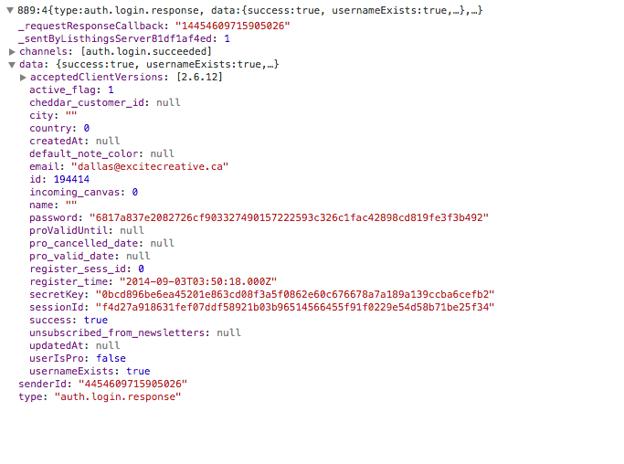
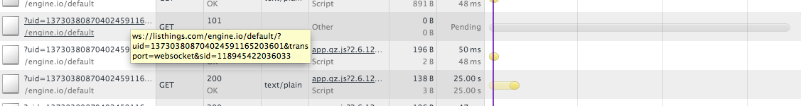
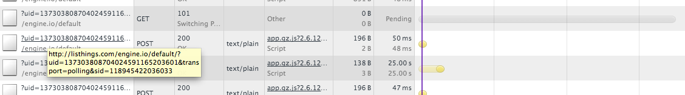

Listhings.com Code Audit Prepared for Sam Bond Prepared by Dallas Read September 23, 2014
I've analyzed the code in the Github repository for Listhings.com for efficiency, scalability, and a way to solve our nagging "loading" issue. One thing is for sure, this really is a great, versatile project. The code base does show some signs of age, but it is a working code base (more or less). There are a couple out-dated libraries that could be replaced by more robust solutions, but, if it works... A Side-Node (Note) Day-to-day, I work on Ruby on Rails. The big difference I've noticed with Node.js is there's very little file organization structure. With a framework like Rails, its file structure is extremely organized. While parts of this project are, the 3792 line index.js feels like a bit of a catchall. I can run a complex Rails project with no more than a couple hundred lines in a file, which makes for a more productive time in the code. Another thing I noticed was how many convenient functions that Ruby includes, but JS requires you to write your own code. Finally, you'll notice that all my suggestions are in green. Tests One of the few sore spots of this project is that there are no tests, automated or otherwise. Tests are essential to quality software writing. Usually, a test file can be run that will run your code to make sure everything works - before you push to production. I'm sure you've seen wack-a-mole bug squashing - tests are the best (and only) way to avoid that. The Client-Side Code The client side is the code that your browser would run if you visited Listhings.com - the front end. All in all, there are no real concerns here. - CSS: Nothing to say here! - Images: Compress for faster loading or replaced with CSS - Javascript: iPad-related event libraries could be updated - HTTPS: With doctors and teachers as the main user-base, it would be a good idea to install an SSL certificate for an added layer of security. - Build Tools: Compressing CSS/JS with a PHP script is very... quaint. :D Nowadays, a build tool like GruntJS would be used. A little old-school, but, once again, it works! - Sign In Page: Always loads fast because your computer doesn't have to connect to the socket server. This was a nice thing to noticed, cause it showed me the issue was with... The Server-Side Code The server code is everything that the app visitor can't see - the back end. This is where I originally suspected our problem would lie. Like an iceberg, this is the hidden 90% and therefore dangerous parts of the code. - api/helpers/xhrsockets.js:5: It reads, "need to be wary about memory leaks from these objects." Just a slightly suspicious piece of code. :D Monit is a program that checks to make sure that Node.js doesn't run out of memory. If it does, Monit will restart the Node.js server. It appears as though there is a monit configuration file, but it could use a little fine-tuning to ensure that it will reload itself when memory gets limited. - api/index.js:845-864: These nested IF statements worry me, but they're followed by a comment that states, "listhings specific stuff below." This makes me think the code above was copied from somewhere else. Regardless, re-building Listhings or integrating it with Firebase or Pusher would eliminate huge chunks of code (the upper half of the file), leaving less to maintain. More on websockets later. - api/index.js:725-747: This seemed a little bizarre. Garbage collection is a good thing, it frees up memory (absolutely perfect code wouldn't need any garbage collection). However, running anything every 5 seconds seems a little too frequent for comfort and uses precious resources. I would reduce the frequency to every 30 seconds (30000). - Routes: All of the routes (urls) of the application seem to work great (which means no broken links). - static/js/shared/shared.js:71-93: All of these connections are created whenever a user visits a canvas. A proper real-time set up would have the user only connecting to one channel, listening to multiple events. More on websockets later. - Visible Password?: As I was inspecting the page requests, I saw something I shouldn't have. It would be best to hide a couple of these fields from the client (eg. password, secretKey, cheddar_customer_id, maybe even ID):  Which brings us to: The Real Issue If you're logged in to Listhings and visit listhings.com, you'll be faced with a corkboard background for exactly 25 seconds. I discovered this while I was looking at the network waterfall in the Chrome Inspector (command + option + I in Chrome). It just so happens that there's something in the code that delays 25 seconds: engine.io. More specifically, falling back to web sockets. Wait... wha???? Engine.io makes the real-time web work (where you can see what I'm doing on my canvas). It uses a state-of-the-art technology called web sockets to transfer the live data. If web sockets aren't available, then it will fall back to something called polling. This timeout is set to 25 seconds. You can see "transport=websocket" in the first URL (the gray bar on the right means it never loaded, but keeps trying):  You can see "transport=polling" in the next URL that loads after a 25 second delay:  It looks like, at one time, the web socket server was working, but is not responding anymore. So, we need to fix the web socket server OR tell engine.io not to use it. By the way, I read somewhere today that sockets are something like 3000x more efficient/faster than polling. As far as I can tell, telling engine.io not to use websockets should be as simple as changing line 18 of api/index.js from "var socketIoTransports = ['polling','websocket'];" to "var socketIoTransports = ['polling'];" and re-deploying the newly compressed assets. Starting the websocket server may just be a quick email to Martin (the original developer?) asking him how to do so? It's probably a one-liner. An Aside If this were my project, I would use Pusher as the transport layer. Like engine.io (engine.io is basically Pusher on your own server), Pusher relies on web sockets, falling back to polling, then to flash, then other things. One thing I've learned is that more code means more chance of breaking. If I can hand off a chunk to another service, I happily pay the premium! :D Re-Creation I couldn't honestly recommend a re-building of the site if you just want to keep up with the status quo. But if you're really looking at adding new features down the road, I would recommend a big cleanup or rebuilding (on any technology stack). I personally feel the code base is too rough around the edges to add features - it would feel like a big hack. :D Conclusion I'm confident that the slow loading is caused by the web socket server not being available, which was the main mission. I actually think the "Re-connecting..." message is connected. I think it's caused from the "web socket" transport mode falling back to the slower method of "polling". As one last suggestion, I would recommend installing New Relic on the server (just a free plan). They give really detailed reporting on server load and db/server/client slow-downs. Kind regards,Dallas Read dallasgood@gmail.com